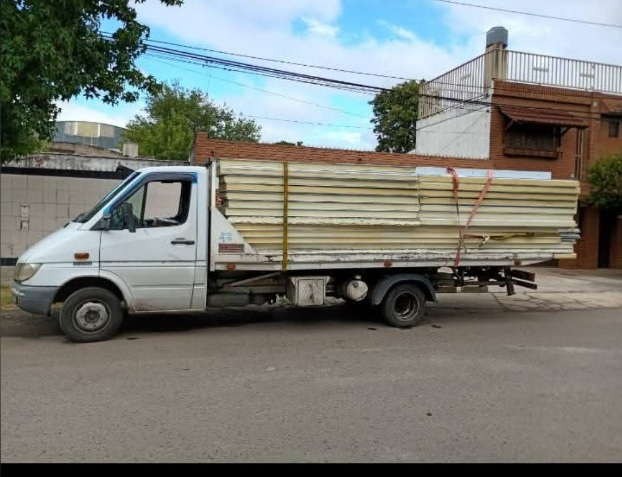

🏗️
Máquinas
Traslado de máquinas de diferentes tipos, sujeto a dimensiones y peso de la carga.
Transporte de máquinas, equipos y cargas en general de hasta 3.000 kg. Realizamos servicios en Rosario, alrededores y traslados de larga distancia.
Consultanos indicando qué necesitás trasladar, peso aproximado, origen y destino para evaluar el servicio.
Traslado de máquinas de diferentes tipos, sujeto a dimensiones y peso de la carga.
Transporte de equipos y cargas en general con capacidad de hasta 3.000 kg.
Traslados desde Rosario hacia otras localidades y provincias según disponibilidad.
Contamos con experiencia realizando traslados de vehículos, equipos, máquinas y otras cargas.

Además del traslado de vehículos, realizamos transporte de máquinas, equipos y cargas en general de hasta 3.000 kg. Cada trabajo se evalúa según las características de la carga, sus dimensiones, peso y los puntos de origen y destino.
Nuestra capacidad permite realizar distintos tipos de transporte de hasta 3.000 kg. Antes de confirmar el servicio es importante conocer el peso aproximado y las dimensiones de lo que necesitás trasladar.
Realizamos traslados dentro de Rosario para particulares, comercios y otras necesidades de transporte. El servicio puede coordinarse previamente según disponibilidad.
También podemos realizar traslados desde o hacia localidades cercanas a Rosario. El presupuesto se calcula teniendo en cuenta el recorrido y las características de la carga.
Para viajes hacia otras localidades o provincias, envianos por WhatsApp el origen, destino, tipo de máquina o carga, peso aproximado y, si es posible, una foto. Con esos datos podemos evaluar el traslado y preparar un presupuesto.
Traslados coordinados según las características de cada trabajo.
🏗️ Máquinas, equipos y cargas en general
⚖️ Capacidad de hasta 3.000 kg
📍 Servicios en Rosario y alrededores
🛣️ Traslados de larga distancia
🇦🇷 Viajes hacia otras provincias
Para cotizar, envianos una foto, peso aproximado, origen y destino por WhatsApp.
← Ver todos nuestros servicios